Code
library(xts)
library(tseries)
library(xts)
library(zoo)
library(forecast)
library(readxl)library(xts)
library(tseries)
library(xts)
library(zoo)
library(forecast)
library(readxl)Fund=read.csv("8 Funds.csv",header=TRUE)
head(Fund,5) Date LP60083956 LP60071398 LP60088034 LP60081330 LP60094177 LP60058385
1 1/4/2005 46.60 102.58 10.96 25.03 10.85 5.47
2 1/5/2005 46.60 102.01 10.93 24.98 10.80 5.52
3 1/6/2005 46.60 101.55 10.97 25.01 10.82 5.51
4 1/7/2005 46.60 101.63 11.07 25.08 10.88 5.54
5 1/10/2005 46.72 101.72 11.09 25.23 10.91 5.55
LP60071418 LP60070661
1 93.48 8.43
2 90.09 8.38
3 90.62 8.40
4 90.19 8.51
5 91.45 8.52time=as.Date(Fund$Date,format="%m/%d/%Y")
head(time,5)[1] "2005-01-04" "2005-01-05" "2005-01-06" "2005-01-07" "2005-01-10"Fundnew=Fund[,-1]
head(Fundnew,5) LP60083956 LP60071398 LP60088034 LP60081330 LP60094177 LP60058385 LP60071418
1 46.60 102.58 10.96 25.03 10.85 5.47 93.48
2 46.60 102.01 10.93 24.98 10.80 5.52 90.09
3 46.60 101.55 10.97 25.01 10.82 5.51 90.62
4 46.60 101.63 11.07 25.08 10.88 5.54 90.19
5 46.72 101.72 11.09 25.23 10.91 5.55 91.45
LP60070661
1 8.43
2 8.38
3 8.40
4 8.51
5 8.52Fund.xts=xts(Fundnew,order.by=time)
head(Fund.xts,5) LP60083956 LP60071398 LP60088034 LP60081330 LP60094177 LP60058385
2005-01-04 46.60 102.58 10.96 25.03 10.85 5.47
2005-01-05 46.60 102.01 10.93 24.98 10.80 5.52
2005-01-06 46.60 101.55 10.97 25.01 10.82 5.51
2005-01-07 46.60 101.63 11.07 25.08 10.88 5.54
2005-01-10 46.72 101.72 11.09 25.23 10.91 5.55
LP60071418 LP60070661
2005-01-04 93.48 8.43
2005-01-05 90.09 8.38
2005-01-06 90.62 8.40
2005-01-07 90.19 8.51
2005-01-10 91.45 8.52colnames(Fund.xts)[1] "LP60083956" "LP60071398" "LP60088034" "LP60081330" "LP60094177"
[6] "LP60058385" "LP60071418" "LP60070661"Fund2=Fund.xts[,2]
summary(Fund2) Index LP60071398
Min. :2005-01-04 Min. : 93.52
1st Qu.:2008-04-03 1st Qu.:152.69
Median :2011-07-04 Median :172.48
Mean :2011-07-03 Mean :178.84
3rd Qu.:2014-10-01 3rd Qu.:201.23
Max. :2017-12-29 Max. :299.00 class(Fund2)[1] "xts" "zoo"dim(Fund2)[1] 3389 1colnames(Fund2)[1] "LP60071398"head(Fund2) LP60071398
2005-01-04 102.58
2005-01-05 102.01
2005-01-06 101.55
2005-01-07 101.63
2005-01-10 101.72
2005-01-11 101.46tail(Fund2) LP60071398
2017-12-22 289.85
2017-12-25 289.85
2017-12-26 289.85
2017-12-27 287.69
2017-12-28 288.87
2017-12-29 288.36start(Fund2)[1] "2005-01-04"end(Fund2)[1] "2017-12-29"length(Fund2)[1] 3389plot(Fund2,main="Fund2",ylab="Price",xlab="Date")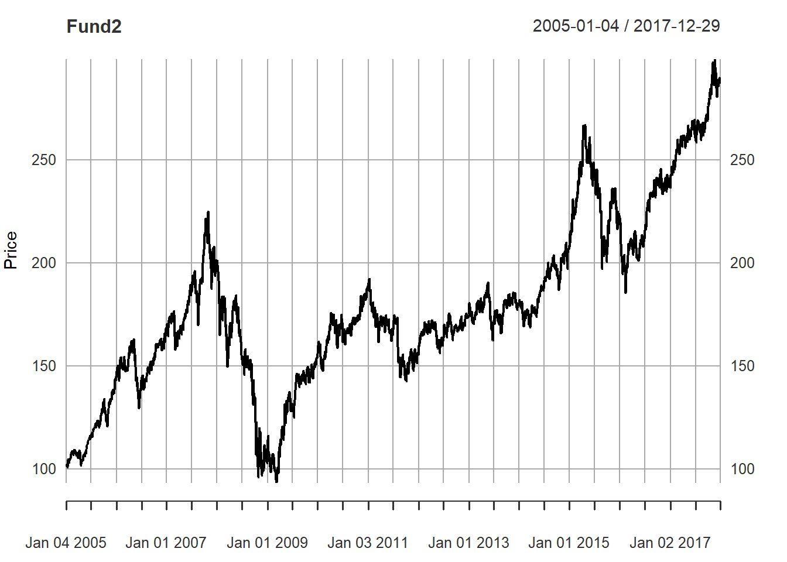
par(mfrow=c(1,2))
acf(Fund2,lag.max=40,type="correlation")
pacf(Fund2,lag.max=40)
adf.test(Fund2)
Augmented Dickey-Fuller Test
data: Fund2
Dickey-Fuller = -1.8825, Lag order = 15, p-value = 0.6281
alternative hypothesis: stationaryreturn=diff(log(Fund2))
head(return,5) LP60071398
2005-01-04 NA
2005-01-05 -0.0055721343
2005-01-06 -0.0045195597
2005-01-07 0.0007874791
2005-01-10 0.0008851734return=na.omit(return)
head(return,5) LP60071398
2005-01-05 -0.0055721343
2005-01-06 -0.0045195597
2005-01-07 0.0007874791
2005-01-10 0.0008851734
2005-01-11 -0.0025593084par(mfrow = c(1, 1))
plot(return,main="Returns of Fund2",ylab="return",xlab="Date")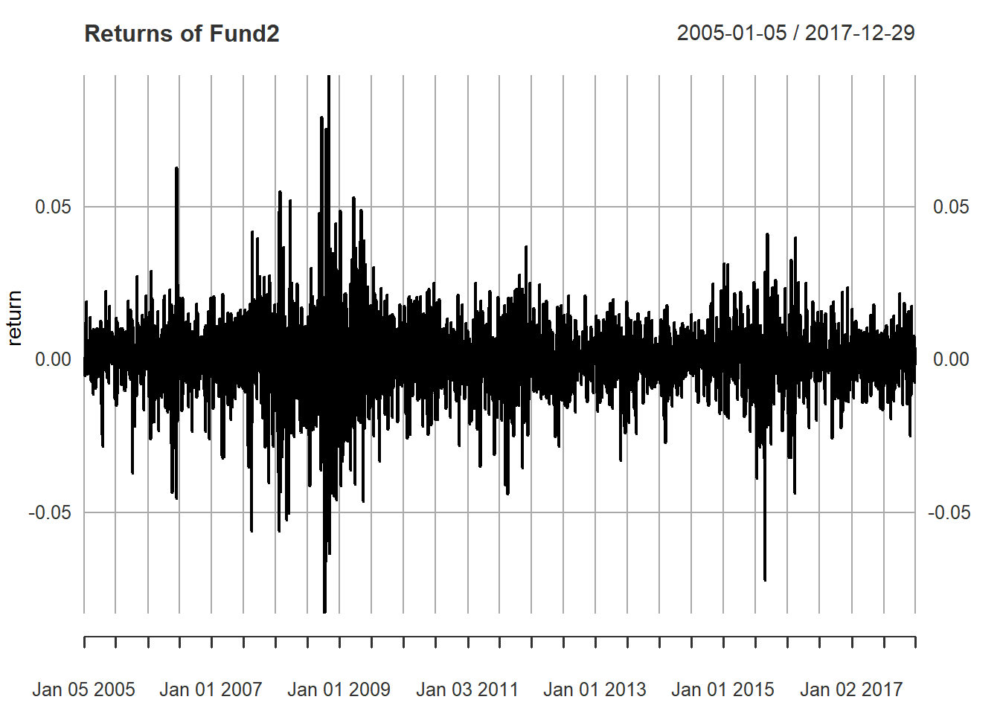
adf.test(return)
Augmented Dickey-Fuller Test
data: return
Dickey-Fuller = -14.741, Lag order = 15, p-value = 0.01
alternative hypothesis: stationarypar(mfrow=c(1,2))
acf(return,lag.max=40,type="correlation")
pacf(return,lag.max=40)
model1=arima(return,order=c(0,0,1))
model1
Call:
arima(x = return, order = c(0, 0, 1))
Coefficients:
ma1 intercept
0.0406 3e-04
s.e. 0.0172 2e-04
sigma^2 estimated as 0.0001504: log likelihood = 10103.5, aic = -20200.99model2=arima(return,order=c(1,0,0))
model2
Call:
arima(x = return, order = c(1, 0, 0))
Coefficients:
ar1 intercept
0.0401 3e-04
s.e. 0.0172 2e-04
sigma^2 estimated as 0.0001504: log likelihood = 10103.45, aic = -20200.91model3=arima(return,order=c(0,0,2))
model3
Call:
arima(x = return, order = c(0, 0, 2))
Coefficients:
ma1 ma2 intercept
0.0400 -0.0052 3e-04
s.e. 0.0173 0.0177 2e-04
sigma^2 estimated as 0.0001504: log likelihood = 10103.54, aic = -20199.08model4=arima(return,order=c(1,0,2))
model4
Call:
arima(x = return, order = c(1, 0, 2))
Coefficients:
ar1 ma1 ma2 intercept
0.6809 -0.6442 -0.0539 3e-04
s.e. 0.1467 0.1469 0.0166 2e-04
sigma^2 estimated as 0.0001502: log likelihood = 10106, aic = -20202AIC(model1,model2,model3,model4) df AIC
model1 3 -20200.99
model2 3 -20200.91
model3 4 -20199.08
model4 5 -20202.00The original price series is not stationary, but the returns are:
Price Series (Fund2):
The (ADF) test yielded a p-value of 0.6281 (> 0.05). We cannot reject the null hypothesis of a unit root, it is non-stationary.
Return Series (return):
After taking the log-difference, the ADF test yielded a p-value of 0.01 (< 0.05). We reject the null hypothesis, it is stationary.
Since differencing the data once produces a stationary series (the return), the original process is integrated of order 1 (random walk).
The ARMA(1,2) model is the best because it has the lowest AIC (-20202.00).
The plots of ACF and PACF confirm stationarity and mostly stay within the significance bounds
MSFT=read.csv("MSFT.csv",header=TRUE)
head(MSFT,5) Date Adj.Close
1 1/1/2010 22.12004
2 2/1/2010 22.50467
3 3/1/2010 23.09885
4 4/1/2010 24.08464
5 5/1/2010 20.34655time=as.Date(MSFT$Date,format="%m/%d/%Y")
head(time,5)[1] "2010-01-01" "2010-02-01" "2010-03-01" "2010-04-01" "2010-05-01"MSFTnew=MSFT[,-1]
head(MSFTnew,5)[1] 22.12004 22.50467 23.09885 24.08464 20.34655MSFT.xts=xts(MSFTnew,time)
head(MSFT.xts,5) [,1]
2010-01-01 22.12004
2010-02-01 22.50467
2010-03-01 23.09885
2010-04-01 24.08464
2010-05-01 20.34655MSFT.ts=ts(MSFT[,2],start=c(2010,1),end=c(2019,12),frequency=12)
head(MSFT.ts,5) Jan Feb Mar Apr May
2010 22.12004 22.50467 23.09885 24.08464 20.34655MSFT_MA=rollmean(MSFT.ts,10)
head(MSFT_MA,5) May Jun Jul Aug Sep
2010 21.01661 20.81634 20.80231 20.71444 20.43584plot(MSFT.ts,main="Original vs MA",ylab="Ad.C.P.",xlab="Time",col ="red",lwd=2)
lines(MSFT_MA,col="blue",lwd=2)
legend("topleft",legend=c("Original","MA"),col=c("red","blue"),lty=1,lwd=2)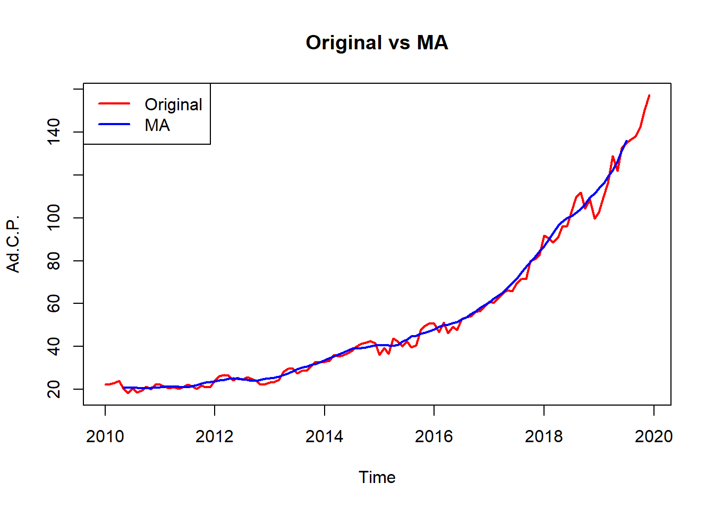
dec=decompose(MSFT.ts,type="additive")
dec$x
Jan Feb Mar Apr May Jun Jul
2010 22.12004 22.50467 23.09885 24.08464 20.34655 18.22817 20.44628
2011 22.22015 21.29865 20.46536 20.89256 20.15906 21.09441 22.23026
2012 24.29114 26.10907 26.71152 26.51280 24.16954 25.49495 24.56149
2013 23.21874 23.51479 24.40029 28.22963 29.76477 29.66431 27.34545
2014 32.97568 33.38527 35.98862 35.47060 35.94472 36.87027 38.16118
2015 36.17065 39.25947 36.66249 43.85794 42.25294 40.06810 42.38234
2016 50.66554 46.79367 51.15899 46.19408 49.09338 47.72978 52.86933
2017 61.08928 60.45619 62.60993 65.08163 66.39352 65.90403 69.50853
2018 91.78175 90.58389 88.58300 90.76675 95.93014 96.12175 103.40325
2019 102.62807 110.09694 116.39996 128.89465 122.06501 132.70018 134.98845
Aug Sep Oct Nov Dec
2010 18.59257 19.50409 21.24027 20.11733 22.36439
2011 21.58120 20.32129 21.74191 20.88464 21.35449
2012 25.68664 24.96750 23.94397 22.33317 22.59281
2013 28.68523 28.78357 30.62580 32.97832 32.60095
2014 40.16826 41.24656 41.77148 42.53664 41.58728
2015 39.49634 40.43281 48.08818 49.65031 51.02423
2016 53.59690 54.06235 56.23986 56.55898 58.71752
2017 71.48766 71.59940 79.95219 80.90376 82.63354
2018 109.49554 111.91309 104.51549 108.50786 99.81742
2019 136.56349 138.18109 142.49458 150.45569 157.27043
$seasonal
Jan Feb Mar Apr May
2010 -0.350245676 -0.709259171 -0.529048398 0.906877028 -0.272078662
2011 -0.350245676 -0.709259171 -0.529048398 0.906877028 -0.272078662
2012 -0.350245676 -0.709259171 -0.529048398 0.906877028 -0.272078662
2013 -0.350245676 -0.709259171 -0.529048398 0.906877028 -0.272078662
2014 -0.350245676 -0.709259171 -0.529048398 0.906877028 -0.272078662
2015 -0.350245676 -0.709259171 -0.529048398 0.906877028 -0.272078662
2016 -0.350245676 -0.709259171 -0.529048398 0.906877028 -0.272078662
2017 -0.350245676 -0.709259171 -0.529048398 0.906877028 -0.272078662
2018 -0.350245676 -0.709259171 -0.529048398 0.906877028 -0.272078662
2019 -0.350245676 -0.709259171 -0.529048398 0.906877028 -0.272078662
Jun Jul Aug Sep Oct
2010 -0.402872004 0.296273436 0.393833084 0.005291061 0.786826908
2011 -0.402872004 0.296273436 0.393833084 0.005291061 0.786826908
2012 -0.402872004 0.296273436 0.393833084 0.005291061 0.786826908
2013 -0.402872004 0.296273436 0.393833084 0.005291061 0.786826908
2014 -0.402872004 0.296273436 0.393833084 0.005291061 0.786826908
2015 -0.402872004 0.296273436 0.393833084 0.005291061 0.786826908
2016 -0.402872004 0.296273436 0.393833084 0.005291061 0.786826908
2017 -0.402872004 0.296273436 0.393833084 0.005291061 0.786826908
2018 -0.402872004 0.296273436 0.393833084 0.005291061 0.786826908
2019 -0.402872004 0.296273436 0.393833084 0.005291061 0.786826908
Nov Dec
2010 0.536440778 -0.662038384
2011 0.536440778 -0.662038384
2012 0.536440778 -0.662038384
2013 0.536440778 -0.662038384
2014 0.536440778 -0.662038384
2015 0.536440778 -0.662038384
2016 0.536440778 -0.662038384
2017 0.536440778 -0.662038384
2018 0.536440778 -0.662038384
2019 0.536440778 -0.662038384
$trend
Jan Feb Mar Apr May Jun Jul
2010 NA NA NA NA NA NA 21.05816
2011 20.77393 20.97278 21.13136 21.18631 21.23919 21.22908 21.27329
2012 23.54737 23.81556 24.18022 24.46556 24.61767 24.72962 24.73653
2013 25.35584 25.59678 25.88073 26.31814 27.04010 27.90065 28.72419
2014 33.08853 34.01765 35.01540 35.99909 36.86176 37.63445 38.14201
2015 40.48780 40.63568 40.57378 40.80307 41.36267 42.05228 43.04944
2016 47.32943 48.35391 49.50933 50.41688 51.04440 51.65281 52.40769
2017 60.15826 61.59701 63.07317 64.79189 66.79427 68.80514 71.08049
2018 85.56664 88.56259 91.82599 94.52919 96.70283 98.56900 99.73692
2019 113.85251 116.29639 118.51872 121.19568 124.52597 128.66767 NA
Aug Sep Oct Nov Dec
2010 21.01208 20.85210 20.60937 20.46855 20.58017
2011 21.56001 22.02071 22.51514 22.91642 23.26688
2012 24.58375 24.37936 24.35459 24.65926 25.06612
2013 29.54200 30.43612 31.22068 31.77988 32.33763
2014 38.51989 38.79272 39.17027 39.78259 40.17867
2015 43.96732 44.88526 45.58662 45.96898 46.57323
2016 53.41128 54.45768 55.72178 57.22960 58.70770
2017 73.61467 75.95220 78.10462 80.40553 82.89529
2018 101.00190 102.97398 105.72168 108.39930 111.01235
2019 NA NA NA NA NA
$random
Jan Feb Mar Apr May
2010 NA NA NA NA NA
2011 1.79647418 1.03512788 -0.13695327 -1.20063244 -0.80804880
2012 1.09401893 3.00276992 3.06035431 1.14036135 -0.17605101
2013 -1.78685145 -1.37273050 -0.95138377 1.00461518 2.99675562
2014 0.23740026 0.07688680 1.50227756 -1.43536365 -0.64496188
2015 -3.96690278 -0.66695229 -3.38223706 2.14799443 1.16235133
2016 3.68635984 -0.85098429 2.17870969 -5.12968003 -1.67893888
2017 1.28126472 -0.43156070 0.06581006 -0.61714028 -0.12867417
2018 6.56535518 2.73056559 -2.71393698 -4.66931607 -0.50061788
2019 -10.87418495 -5.49018850 -1.58970664 6.79209543 -2.18888042
Jun Jul Aug Sep Oct
2010 NA -0.90815056 -2.81334275 -1.35329719 -0.15592891
2011 0.26820446 0.66069606 -0.37264596 -1.70470389 -1.56005920
2012 1.16819817 -0.47131360 0.70904812 0.58285344 -1.19745291
2013 2.16653225 -1.67502148 -1.25060442 -1.65783664 -1.38170491
2014 -0.36130533 -0.27709681 1.25453471 2.44854852 1.81438338
2015 -1.58130554 -0.96337181 -4.86481113 -4.45774464 1.71472863
2016 -3.52015854 0.16537273 -0.20821496 -0.40061294 -0.26874620
2017 -2.49823479 -1.86823431 -2.52084213 -4.35808548 1.06073772
2018 -2.04437800 3.37005369 8.09981242 8.93381273 -1.99302370
2019 4.43538121 NA NA NA NA
Nov Dec
2010 -0.88766328 2.44626118
2011 -2.56822011 -1.25035195
2012 -2.86252819 -1.81127524
2013 0.66199626 0.92536418
2014 2.21760647 2.07064822
2015 3.14489435 5.11303147
2016 -1.20706224 0.67186055
2017 -0.03820632 0.40029063
2018 -0.42788303 -10.53289512
2019 NA NA
$figure
[1] -0.350245676 -0.709259171 -0.529048398 0.906877028 -0.272078662
[6] -0.402872004 0.296273436 0.393833084 0.005291061 0.786826908
[11] 0.536440778 -0.662038384
$type
[1] "additive"
attr(,"class")
[1] "decomposed.ts"plot(dec)
ad_dec=MSFT.ts-dec$seasonal
plot(MSFT.ts,main="Original vs Ad.S",ylab="Price",xlab="Time",col="red",lwd=2)
lines(ad_dec,col="blue",lwd=2)
legend("topleft",legend=c("Original","Adjusted"),col=c("red","blue"),lty=1,lwd=2)
HW=HoltWinters(MSFT.ts,seasonal="additive")
HWHolt-Winters exponential smoothing with trend and additive seasonal component.
Call:
HoltWinters(x = MSFT.ts, seasonal = "additive")
Smoothing parameters:
alpha: 0.8081951
beta : 0.06711894
gamma: 0.3070682
Coefficients:
[,1]
a 155.72063694
b 3.14592341
s1 1.83644081
s2 1.13833328
s3 0.47781402
s4 0.95540145
s5 -0.65718658
s6 -0.04486145
s7 0.35617170
s8 -1.05558191
s9 -1.38982893
s10 0.27759949
s11 0.52428442
s12 0.95696130plot(HW,main="HoltWinters")
prediction=predict(HW,n.ahead=10,prediction.interval=T,level=0.95)
prediction fit upr lwr
Jan 2020 160.7030 167.4541 153.9519
Feb 2020 163.1508 172.0659 154.2357
Mar 2020 165.6362 176.4888 154.7837
Apr 2020 169.2597 181.9382 156.5812
May 2020 170.7931 185.2377 156.3485
Jun 2020 174.5513 190.7300 158.3726
Jul 2020 178.0983 195.9960 160.2006
Aug 2020 179.8324 199.4448 160.2201
Sep 2020 182.6441 203.9741 161.3141
Oct 2020 187.4575 210.5132 164.4017plot(prediction,main="MSFT prediction using HoltWinters")
forecast=forecast(HW,h=10,level=c(0.80,0.95))
forecast Point Forecast Lo 80 Hi 80 Lo 95 Hi 95
Jan 2020 160.7030 156.2887 165.1173 153.9519 167.4541
Feb 2020 163.1508 157.3216 168.9801 154.2357 172.0659
Mar 2020 165.6362 158.5401 172.7323 154.7837 176.4888
Apr 2020 169.2597 160.9697 177.5498 156.5812 181.9382
May 2020 170.7931 161.3483 180.2379 156.3485 185.2377
Jun 2020 174.5513 163.9726 185.1300 158.3726 190.7300
Jul 2020 178.0983 166.3956 189.8009 160.2006 195.9960
Aug 2020 179.8324 167.0086 192.6563 160.2201 199.4448
Sep 2020 182.6441 168.6972 196.5910 161.3141 203.9741
Oct 2020 187.4575 172.3821 202.5328 164.4017 210.5132plot(forecast,main="MSFT forecast using HoltWinters")
residuals=forecast$residuals
residuals Jan Feb Mar Apr May
2010 NA NA NA NA NA
2011 -0.17519775 0.13776566 0.15003803 0.04062846 0.01536056
2012 3.03842884 3.41689596 1.97787305 -0.56354860 -2.01131031
2013 0.44164249 1.57206492 2.28932898 3.95453191 2.85446572
2014 -0.50756377 0.99679407 3.44562931 -0.74080660 0.74064937
2015 -6.75471685 2.56395157 -1.50859102 6.62747834 -0.05364583
2016 -1.19743366 -4.43146176 4.17950023 -5.40193867 2.70852045
2017 1.69378571 -0.59202716 1.84452872 1.92514867 1.42535370
2018 7.43904225 -0.96808999 -3.55323072 -0.13754823 4.28785331
2019 -1.19828689 7.25311882 6.74986015 11.65955203 -6.63185675
Jun Jul Aug Sep Oct
2010 NA NA NA NA NA
2011 -0.05330014 1.55958818 1.32986484 -2.27632408 -1.07140669
2012 -0.24050241 -0.82303670 2.60741976 -1.40058968 -3.58853543
2013 -1.06581934 -2.51609739 2.20346113 -0.49444173 -0.53917042
2014 -0.31667078 1.17981868 2.95822594 0.40479909 -2.11452837
2015 -3.51526032 1.67689865 -1.79581997 -0.09218546 5.50224893
2016 -1.93850731 4.43514045 2.33800567 -0.30821192 -0.77238619
2017 -1.59065625 2.01870871 2.80796901 -0.88304470 4.88403473
2018 -0.96095374 4.79167857 6.44386795 1.17764272 -12.08242555
2019 7.36085131 0.26793761 0.41916818 -0.68335614 -0.06200813
Nov Dec
2010 NA NA
2011 -0.09903535 -1.69760837
2012 -1.42606738 -2.02965854
2013 2.71028962 -2.34658456
2014 0.28166169 -3.30253177
2015 2.41855149 -0.45411946
2016 0.06817592 0.09091387
2017 0.99328282 -0.95470247
2018 0.65766656 -11.65767240
2019 5.41486643 4.46049187residuals=na.omit(residuals)
residuals Jan Feb Mar Apr May
2011 -0.17519775 0.13776566 0.15003803 0.04062846 0.01536056
2012 3.03842884 3.41689596 1.97787305 -0.56354860 -2.01131031
2013 0.44164249 1.57206492 2.28932898 3.95453191 2.85446572
2014 -0.50756377 0.99679407 3.44562931 -0.74080660 0.74064937
2015 -6.75471685 2.56395157 -1.50859102 6.62747834 -0.05364583
2016 -1.19743366 -4.43146176 4.17950023 -5.40193867 2.70852045
2017 1.69378571 -0.59202716 1.84452872 1.92514867 1.42535370
2018 7.43904225 -0.96808999 -3.55323072 -0.13754823 4.28785331
2019 -1.19828689 7.25311882 6.74986015 11.65955203 -6.63185675
Jun Jul Aug Sep Oct
2011 -0.05330014 1.55958818 1.32986484 -2.27632408 -1.07140669
2012 -0.24050241 -0.82303670 2.60741976 -1.40058968 -3.58853543
2013 -1.06581934 -2.51609739 2.20346113 -0.49444173 -0.53917042
2014 -0.31667078 1.17981868 2.95822594 0.40479909 -2.11452837
2015 -3.51526032 1.67689865 -1.79581997 -0.09218546 5.50224893
2016 -1.93850731 4.43514045 2.33800567 -0.30821192 -0.77238619
2017 -1.59065625 2.01870871 2.80796901 -0.88304470 4.88403473
2018 -0.96095374 4.79167857 6.44386795 1.17764272 -12.08242555
2019 7.36085131 0.26793761 0.41916818 -0.68335614 -0.06200813
Nov Dec
2011 -0.09903535 -1.69760837
2012 -1.42606738 -2.02965854
2013 2.71028962 -2.34658456
2014 0.28166169 -3.30253177
2015 2.41855149 -0.45411946
2016 0.06817592 0.09091387
2017 0.99328282 -0.95470247
2018 0.65766656 -11.65767240
2019 5.41486643 4.46049187plot(residuals,main="Residuals",ylab="Residuals",xlab="Time")
abline(h = 0, col = "red", lty = 2)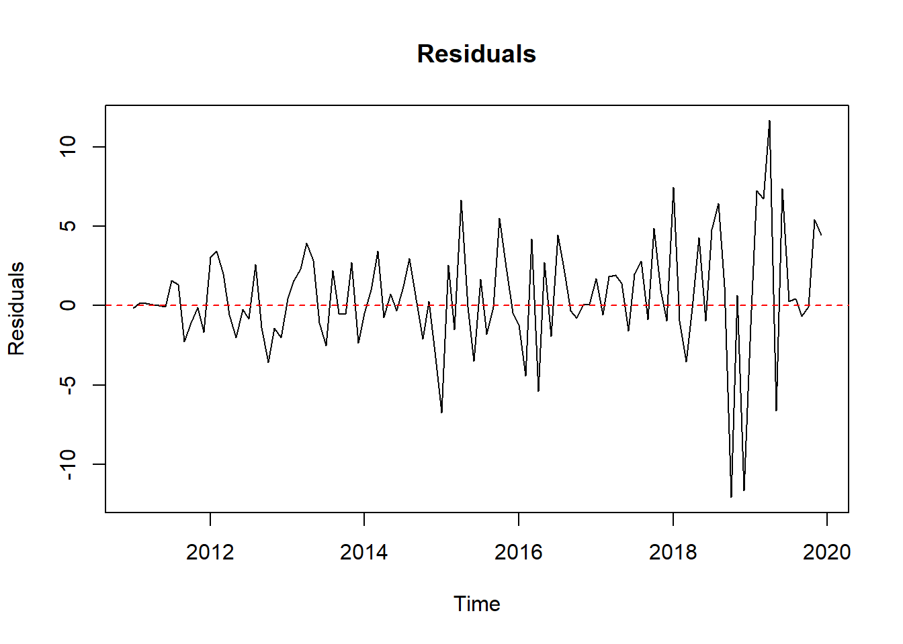
par(mfrow=c(1,2))
acf(residuals)
pacf(residuals)
Box.test(residuals,lag=20,type="Ljung-Box")
Box-Ljung test
data: residuals
X-squared = 27.429, df = 20, p-value = 0.1236shapiro.test(residuals)
Shapiro-Wilk normality test
data: residuals
W = 0.94243, p-value = 0.0001494jarque.bera.test(residuals)
Jarque Bera Test
data: residuals
X-squared = 35.857, df = 2, p-value = 1.636e-08ks.test(residuals,"pnorm",mean=mean(residuals),sd=sd(residuals))
Asymptotic one-sample Kolmogorov-Smirnov test
data: residuals
D = 0.10089, p-value = 0.2216
alternative hypothesis: two-sidedThe residuals show no significant autocorrelation, as almost all lags fall within the significance bounds
With a p-value of 0.1236 (> 0.05), we fail to reject the null hypothesis of no autocorrelation (white noise).
The residuals are not perfectly normal (Shapiro test # jurqe bera < 0.05)
data=read_excel("c7ex5.xls")
head(data,5)# A tibble: 5 × 4
OBS X1 X2 X3
<chr> <dbl> <dbl> <dbl>
1 1 22.1 101. 53.8
2 2 24.4 101. 55
3 3 19.7 100.0 54.8
4 4 13.2 96.0 55.0
5 5 22.8 99.0 56.6ser1=data$X1
ser1.ts=ts(ser1,start=1,frequency=1)
head(ser1,5)[1] 22.10000 24.40000 19.66114 13.17239 22.76479ser2=data$X2
ser2.ts=ts(ser2,start=1,frequency=1)
head(ser2,5)[1] 101.20000 101.07199 99.97172 96.03309 99.04480ser3=data$X3
ser3.ts=ts(ser3,start=1,frequency=1)
head(ser3,5)[1] 53.80000 55.00000 54.79635 55.00262 56.59452par(mfrow = c(3,1))
plot(ser1.ts,main="ser1",ylab="value",col="blue",lwd=2)
plot(ser2.ts,main="ser2",ylab="value",col="red",lwd=2)
plot(ser3.ts,main="ser3",ylab="value",col="green",lwd=2)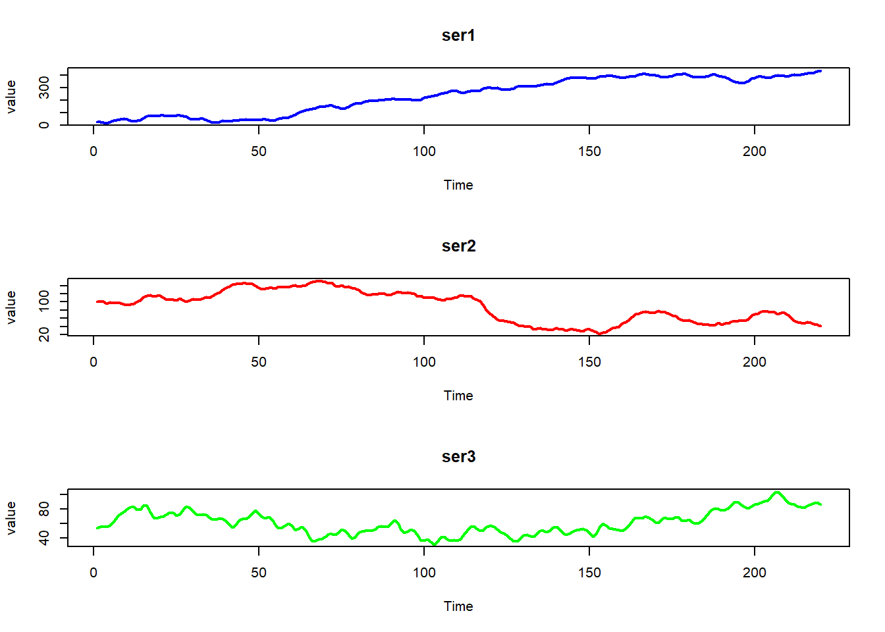
summary(ser1.ts) Min. 1st Qu. Median Mean 3rd Qu. Max.
13.17 73.43 269.67 237.41 382.05 439.50 summary(ser2.ts) Min. 1st Qu. Median Mean 3rd Qu. Max.
21.59 51.51 97.66 88.53 119.80 151.40 summary(ser3.ts) Min. 1st Qu. Median Mean 3rd Qu. Max.
30.49 49.31 57.92 61.17 72.26 103.91 par(mfrow=c(1,2))
acf(ser1.ts,lag.max=40,type="correlation")
pacf(ser1.ts,lag.max=40)
adf.test(ser1.ts)
Augmented Dickey-Fuller Test
data: ser1.ts
Dickey-Fuller = -1.5931, Lag order = 6, p-value = 0.7467
alternative hypothesis: stationarypp.test(ser1.ts)
Phillips-Perron Unit Root Test
data: ser1.ts
Dickey-Fuller Z(alpha) = -5.6692, Truncation lag parameter = 4, p-value
= 0.7914
alternative hypothesis: stationarykpss.test(ser1.ts)
KPSS Test for Level Stationarity
data: ser1.ts
KPSS Level = 4.3617, Truncation lag parameter = 4, p-value = 0.01par(mfrow=c(1,2))
acf(ser2.ts,lag.max=40,type="correlation")
pacf(ser2.ts,lag.max=40)
adf.test(ser2.ts)
Augmented Dickey-Fuller Test
data: ser2.ts
Dickey-Fuller = -2.4621, Lag order = 6, p-value = 0.3821
alternative hypothesis: stationarypp.test(ser2.ts)
Phillips-Perron Unit Root Test
data: ser2.ts
Dickey-Fuller Z(alpha) = -5.4487, Truncation lag parameter = 4, p-value
= 0.8038
alternative hypothesis: stationarykpss.test(ser2.ts)
KPSS Test for Level Stationarity
data: ser2.ts
KPSS Level = 2.9049, Truncation lag parameter = 4, p-value = 0.01par(mfrow=c(1,2))
acf(ser3,lag.max=40,type="correlation")
pacf(ser3,lag.max=40)
adf.test(ser3.ts)
Augmented Dickey-Fuller Test
data: ser3.ts
Dickey-Fuller = -1.5941, Lag order = 6, p-value = 0.7463
alternative hypothesis: stationarypp.test(ser3.ts)
Phillips-Perron Unit Root Test
data: ser3.ts
Dickey-Fuller Z(alpha) = -7.0839, Truncation lag parameter = 4, p-value
= 0.7114
alternative hypothesis: stationarykpss.test(ser3.ts)
KPSS Test for Level Stationarity
data: ser3.ts
KPSS Level = 1.095, Truncation lag parameter = 4, p-value = 0.01All 3 series are non-stationary and correlation:
ACF stays positive & pacf has a few significant spekes adf & pp p-value > 0.05 - kpss p-value < 0.05 we should keep going with return and difference
return1=diff(ser1.ts)
head(return1,5)Time Series:
Start = 2
End = 6
Frequency = 1
[1] 2.300000 -4.738855 -6.488752 9.592396 12.620457return2=diff(ser2.ts)
head(return2,5)Time Series:
Start = 2
End = 6
Frequency = 1
[1] -0.1280097 -1.1002707 -3.9386341 3.0117132 -1.8804590return3=diff(ser3.ts)
head(return3,5)Time Series:
Start = 2
End = 6
Frequency = 1
[1] 1.2000000 -0.2036476 0.2062637 1.5919036 4.8195657adf.test(return1)
Augmented Dickey-Fuller Test
data: return1
Dickey-Fuller = -5.3548, Lag order = 6, p-value = 0.01
alternative hypothesis: stationarypp.test(return1)
Phillips-Perron Unit Root Test
data: return1
Dickey-Fuller Z(alpha) = -87.323, Truncation lag parameter = 4, p-value
= 0.01
alternative hypothesis: stationarykpss.test(return1)
KPSS Test for Level Stationarity
data: return1
KPSS Level = 0.10123, Truncation lag parameter = 4, p-value = 0.1adf.test(return2)
Augmented Dickey-Fuller Test
data: return2
Dickey-Fuller = -4.063, Lag order = 6, p-value = 0.01
alternative hypothesis: stationarypp.test(return2)
Phillips-Perron Unit Root Test
data: return2
Dickey-Fuller Z(alpha) = -131.79, Truncation lag parameter = 4, p-value
= 0.01
alternative hypothesis: stationarykpss.test(return2)
KPSS Test for Level Stationarity
data: return2
KPSS Level = 0.1717, Truncation lag parameter = 4, p-value = 0.1adf.test(return3)
Augmented Dickey-Fuller Test
data: return3
Dickey-Fuller = -5.9952, Lag order = 6, p-value = 0.01
alternative hypothesis: stationarypp.test(return3)
Phillips-Perron Unit Root Test
data: return3
Dickey-Fuller Z(alpha) = -77.821, Truncation lag parameter = 4, p-value
= 0.01
alternative hypothesis: stationarykpss.test(return3)
KPSS Test for Level Stationarity
data: return3
KPSS Level = 0.094388, Truncation lag parameter = 4, p-value = 0.1par(mfrow=c(3,2))
acf(return1,lag.max=40,type="correlation")
pacf(return1,lag.max=40)
acf(return2,lag.max=40,type="correlation")
pacf(return2,lag.max=40)
acf(return3,lag.max=40,type="correlation")
pacf(return3,lag.max=40)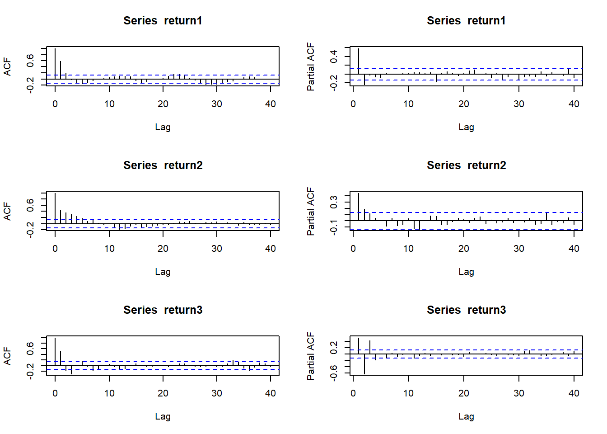
Or we can do it:
returns_total=cbind(return1,return2,return3)
apply(returns_total,2,Box.test,lag=20,type="Ljung-Box")$return1
Box-Ljung test
data: newX[, i]
X-squared = 108.59, df = 20, p-value = 3.553e-14
$return2
Box-Ljung test
data: newX[, i]
X-squared = 145.85, df = 20, p-value < 2.2e-16
$return3
Box-Ljung test
data: newX[, i]
X-squared = 114.88, df = 20, p-value = 2.554e-15model1=auto.arima(return1)
model1Series: return1
ARIMA(0,0,2) with non-zero mean
Coefficients:
ma1 ma2 mean
0.7137 0.2551 1.9348
s.e. 0.0649 0.0629 0.6628
sigma^2 = 25.31: log likelihood = -663.3
AIC=1334.6 AICc=1334.79 BIC=1348.16model2=auto.arima(return2)
model2Series: return2
ARIMA(1,0,1) with zero mean
Coefficients:
ar1 ma1
0.8021 -0.4615
s.e. 0.0692 0.1001
sigma^2 = 9.025: log likelihood = -550.82
AIC=1107.63 AICc=1107.75 BIC=1117.8model3=auto.arima(return3)
model3Series: return3
ARIMA(3,0,1) with zero mean
Coefficients:
ar1 ar2 ar3 ma1
0.7791 -0.7022 0.2142 0.4871
s.e. 0.1176 0.1143 0.0993 0.1100
sigma^2 = 4.133: log likelihood = -465.25
AIC=940.5 AICc=940.79 BIC=957.45tsdiag(model1)
checkresiduals(model1)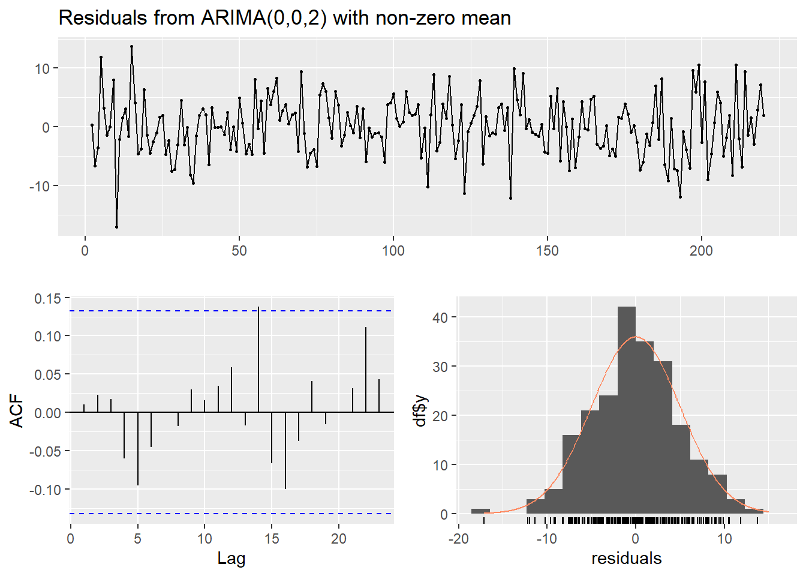
Ljung-Box test
data: Residuals from ARIMA(0,0,2) with non-zero mean
Q* = 3.8734, df = 8, p-value = 0.8684
Model df: 2. Total lags used: 10tsdiag(model2)
checkresiduals(model2)
Ljung-Box test
data: Residuals from ARIMA(1,0,1) with zero mean
Q* = 5.4566, df = 8, p-value = 0.7078
Model df: 2. Total lags used: 10tsdiag(model3)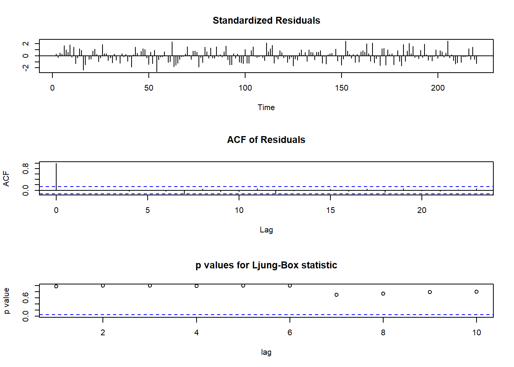
checkresiduals(model3)
Ljung-Box test
data: Residuals from ARIMA(3,0,1) with zero mean
Q* = 6.2461, df = 6, p-value = 0.3962
Model df: 4. Total lags used: 10res1=residuals(model1)
head(res1,5)Time Series:
Start = 2
End = 6
Frequency = 1
[1] 0.2910655 -6.6686829 -3.6241980 11.8796853 3.1371996par(mfrow=c(1,2))
acf(res1,lag.max=40,type="correlation")
pacf(res1,lag.max=40)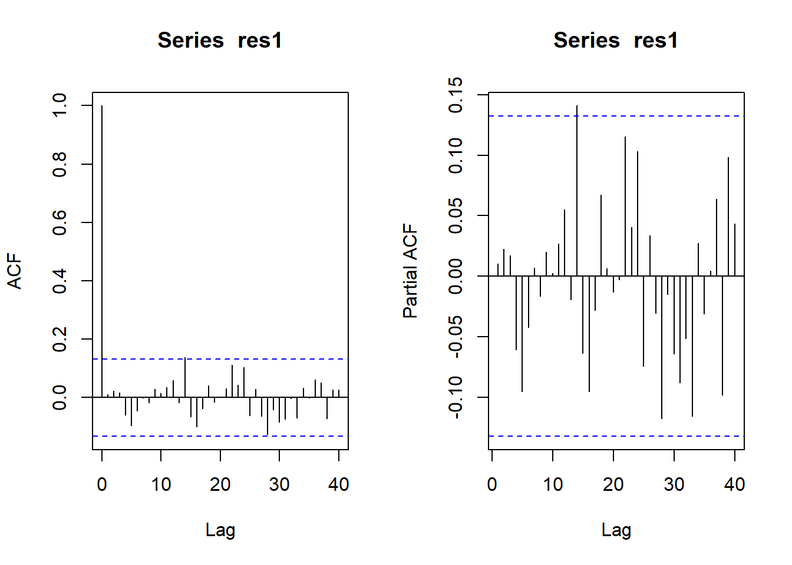
Box.test(res1,lag=20,type="Ljung-Box")
Box-Ljung test
data: res1
X-squared = 13.748, df = 20, p-value = 0.843res2=residuals(model2)
head(res2,5)Time Series:
Start = 2
End = 6
Frequency = 1
[1] -0.1111951 -1.0159559 -3.4947238 4.5615291 -2.1929673par(mfrow=c(1,2))
acf(res2,lag.max=40,type="correlation")
pacf(res2,lag.max=40)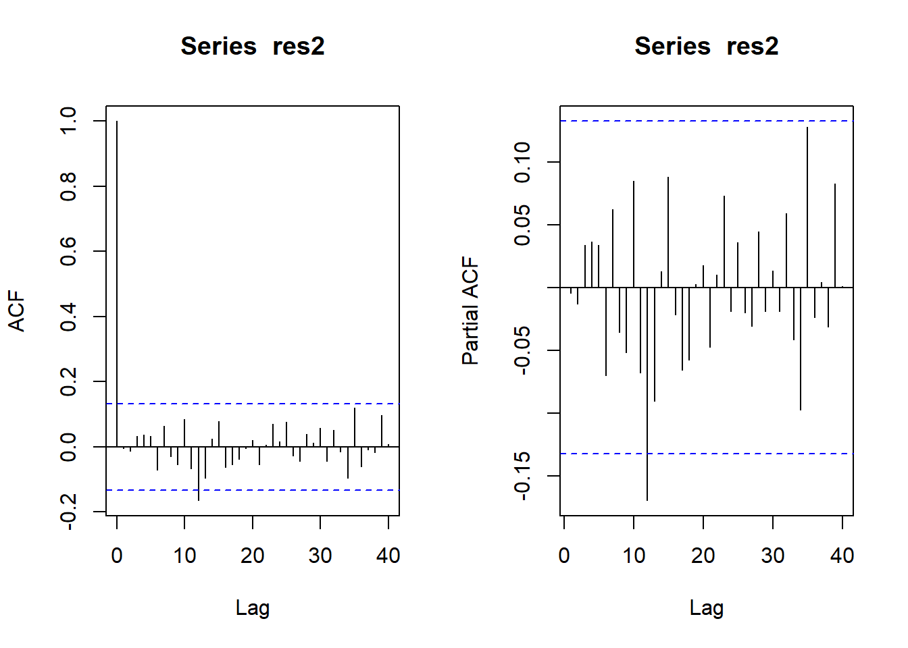
Box.test(res2,lag=20,type="Ljung-Box")
Box-Ljung test
data: res2
X-squared = 18.68, df = 20, p-value = 0.5427res3=residuals(model3)
head(res3,5)Time Series:
Start = 2
End = 6
Frequency = 1
[1] 0.6851210 -0.5637058 0.9933426 0.5935008 3.4643470par(mfrow=c(1,2))
acf(res3,lag.max=40,type="correlation")
pacf(res3,lag.max=40)
Box.test(res3,lag=20,type="Ljung-Box")
Box-Ljung test
data: res3
X-squared = 14.492, df = 20, p-value = 0.8047shapiro.test(res1)
Shapiro-Wilk normality test
data: res1
W = 0.99692, p-value = 0.9468ks.test(res1, "pnorm", mean = mean(res1), sd = sd(res1))
Asymptotic one-sample Kolmogorov-Smirnov test
data: res1
D = 0.028853, p-value = 0.9932
alternative hypothesis: two-sidedshapiro.test(res2)
Shapiro-Wilk normality test
data: res2
W = 0.99427, p-value = 0.5711ks.test(res2, "pnorm", mean = mean(res2), sd = sd(res2))
Asymptotic one-sample Kolmogorov-Smirnov test
data: res2
D = 0.045046, p-value = 0.7658
alternative hypothesis: two-sidedshapiro.test(res3)
Shapiro-Wilk normality test
data: res3
W = 0.9934, p-value = 0.4414ks.test(res3, "pnorm", mean = mean(res3), sd = sd(res3))
Asymptotic one-sample Kolmogorov-Smirnov test
data: res3
D = 0.039753, p-value = 0.8794
alternative hypothesis: two-sidedAll 3 series are stationary. Using auto.arima on series:
We obtain low-order ARIMA(p,1,q) models:
ARIMA(0,1,2), ARIMA(1,1,1) and ARIMA(3,1,1) for the series
The ACF/PACF of the residuals show no significant autocorrelation.
The Ljung–Box tests on residuals (lag 20) have large p-values (> 0.5) (white noise).
forecast1=forecast(model1,h=5)
forecast1 Point Forecast Lo 80 Hi 80 Lo 95 Hi 95
221 5.165362 -1.281541 11.61227 -4.694326 15.02505
222 2.431788 -5.488819 10.35240 -9.681735 14.54531
223 1.934769 -6.154838 10.02438 -10.437218 14.30676
224 1.934769 -6.154838 10.02438 -10.437218 14.30676
225 1.934769 -6.154838 10.02438 -10.437218 14.30676plot(forecast1,main="Forecast for Series1")
forecast2=forecast(model2,h=5)
forecast2 Point Forecast Lo 80 Hi 80 Lo 95 Hi 95
221 -1.7425637 -5.592582 2.107454 -7.630658 4.145531
222 -1.3976751 -5.464913 2.669563 -7.617978 4.822628
223 -1.1210469 -5.322096 3.080002 -7.545997 5.303903
224 -0.8991690 -5.184095 3.385757 -7.452398 5.654059
225 -0.7212053 -5.059235 3.616824 -7.355648 5.913238plot(forecast2,main="Forecast for Series2")
forecast3=forecast(model3,h=5)
forecast3 Point Forecast Lo 80 Hi 80 Lo 95 Hi 95
221 -4.1349545 -6.740425 -1.529484 -8.119678 -0.1502309
222 -0.6454578 -4.849203 3.558288 -7.074532 5.7836161
223 1.6729206 -2.595563 5.941404 -4.855162 8.2010033
224 0.8706380 -3.558273 5.299549 -5.902797 7.6440731
225 -0.6346691 -5.123908 3.854570 -7.500367 6.2310290plot(forecast3,main="Forecast for Series3")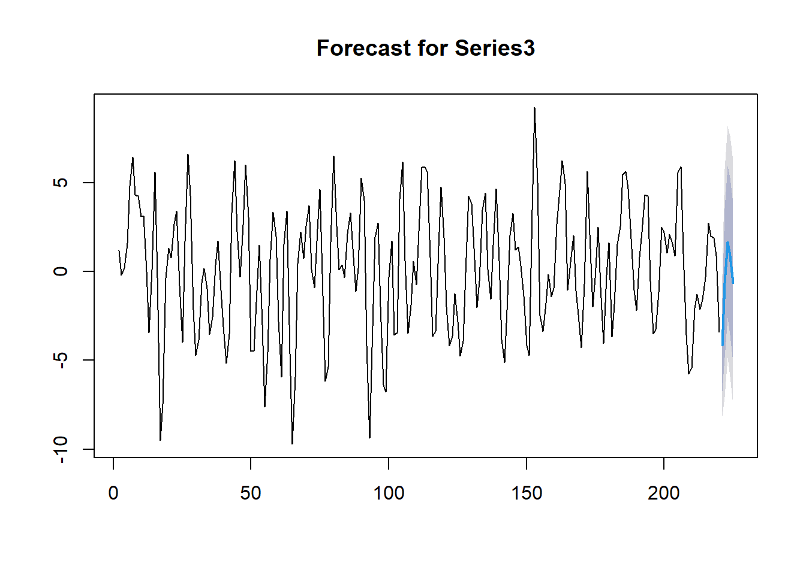
We then computed 5-step-ahead forecasts for each return series using a forecasting function obtaining point forecasts and 95% prediction intervals for the next 5 period.